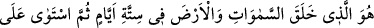
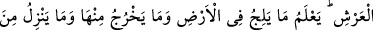
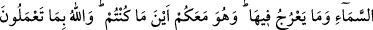
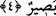

Peygamberimiz’in (s.a.) “Allah’ın ilk yarattığı şey akıldır”[243] demesi de buna
benzer. Yâni yokluktan varlığa ilk açılan şey Hz.Muhammed’in (s.a.) nuru olan akıldır.
Onun da kendisine hükm eden bir âhiriyeti, sonu vardır. Aleyhi’s-salâtü ve’s-selâm
Efendimizin, “Biz ilkleriz, sonlarız”[244], başka bir rivâyette “Biz cismânî yönümüzle
dünyâya en son gelmiş olanlarken, ilâhî ilimde en başta gelenleriz”[245] buyurduğu
gibi.
Cenâb-ı Hakk’ın evveliyeti ve her hangi bir şeyin kendi önüne geçmesinden münezzeh
ve berî oluşundan dolayı, namazı ilk vaktinde kılan kimsenin ibâdet sevabı o vaktin
başlangıcından itibaren sonuna kadar uzanır. Namaz için bu vaktin ilk girişinden itibaren
gecikmeden namazı edâ eden kişinin her iki eli de hayırla dolar. Bu güzel bir
görünümdür. Şa’rânî’nin Cevahir adlı eserinde olduğu gibi, büyükler ıstılah hâline
getirdikleri evveliyet sözüyle başkalarının zihnine gelen şeye değil, sadece buna işâret
etmişlerdir.
Fakir (Bursevî) derim ki: İmam Şafiî Peygamberimiz’in (s.a.) “Vaktin evvelinde
Allah’ın rızâsı vardır”[246] hadîs-i şerîfi ile amel ederek namazın ilk vaktinde kılınması
yönünde amel etmiştir. İmam Ebû Hanife ise “Gecenin bir bölümünde ve secdelerin
ardından da O’nu tesbîh et” (Kaf, 50/40) âyet-i kerîmesiyle amel ederek namazın,
gereğine göre belli vakte kadar geciktirilmesini doğru bulmuştur. Böyle olunca
evveliyette âhiriyet, âhiriyette de evveliyet vardır. Fenâ ve baka bakımından her iki
durumun da farklı yönleri vardır. Vâridât-ı Hakkıyye adlı eserde de açıkladığım gibi,
bazı seherlerde bana işâret edildiğine göre, Kâbe-i Muazzama fecr-i sâdıkın, girmesi
esnasında yerine konulmuştur. Allah Teâlâ’dan nur ve aydınlık dileriz.
4. O, gökleri ve yeri altı günde yaratan, sonra Arş’ın üzerine istivâ edendir. Yere
gireni ve ondan çıkanı, gökten ineni ve oraya yükseleni bilir. Nerede olsanız, O
sizinle beraberdir. Allah yaptıklarınızı görür.
“O” tam ve sonsuz kudreti ve nihâyetsiz hikmeti ile “gökleri ve yeri altı günde
yaratan, sonra” Rahmâniyet sıfatıyla bütün cisimleri kuşatan “Arş’ın üzerinde istivâ”
arşı istilâ “edendir.” Bu altı gün, âhiret günlerinden veya dünya günlerinden olabilir.
İbn Atiyye demiştir ki: Daha doğrusu odur ki, bu altı günün ilki pazar, sonu da cuma
günüdür.
Öyle ki melekler göklerin ve yerin peyderpey var edilişini müşâhede ederler. Allah’ın